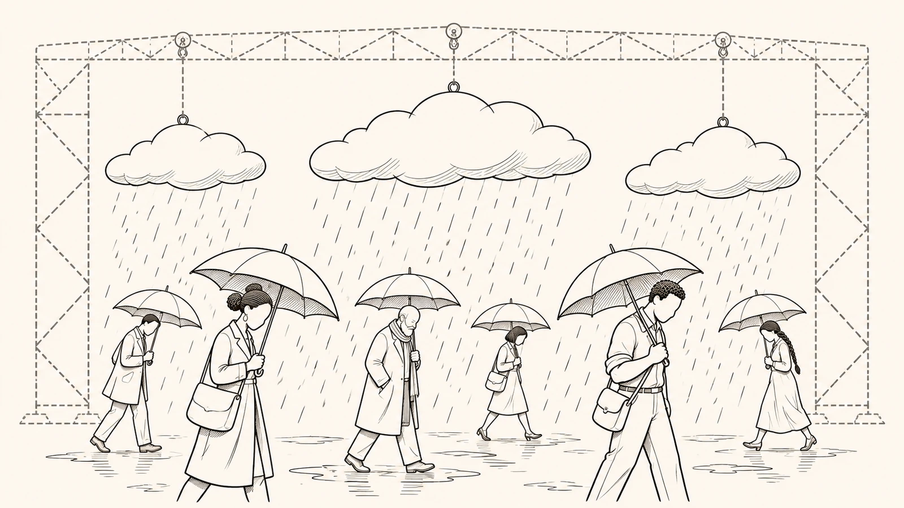

Caminho · Parte 5 de 11
Por que tudo isso parece normal?

De onde vem
Ela fabrica fatos do consumo como quem fabrica clima em sequência previsível, com justificativa superficial e aparência de estrita normalidade.p. 32
Você já deve ter ouvido que é assim que funciona, que foi só uma atualização ou que essa é a regra do jogo. Frases assim fazem uma escolha parecer coisa da natureza, que ninguém decidiu e que ninguém poderia ter decidido diferente.
E isso não acontece só nos jogos, que apenas deixam ver, quase a olho nu, a produção de dependência e de valor simbólico. Fora deles, em aplicativos de trabalho, de estudo, de reputação e de compras, os mesmos efeitos costumam ser apresentados como inevitáveis, e não como escolhas de desenho. Enquanto a plataforma puder dizer que apenas funciona, apenas atualiza e apenas aplica regras, o conflito continua preso à língua do inevitável.
De onde vem
Se a experiência do entretenimento interativo permite ver, quase a olho nu, a produção de dependência, a fabricação de valor simbólico, a conversão de rotina em vínculo e a naturalização de assimetriasp. 23
A diferença é que, fora do jogo, os mesmos efeitos tendem a ser apresentados como inevitáveis, e não como escolhas de arquiteturap. 23
Enquanto a plataforma puder dizer que apenas funciona, apenas atualiza, apenas executa, apenas aplica regras, o conflito permanecerá preso ao idioma do inevitável.p. 792
É aqui que o direito entra. Uma das funções dele é dar nome ao que, sem nome, vira azar, regra do jogo ou necessidade técnica. Quando funciona, o direito impede que a vontade do mais forte vire normalidade só porque ele consegue impor.
De onde vem
O Direito é a língua dos deuses terrenos. É o modo pelo qual a coletividade que se organiza como Estado transforma forças em formas, conflitos em critérios, desejos em limites e poderes em responsabilidades. Quando funciona, impede que a vontade do mais forte vire normalidade por pura capacidade de imposição. Ele nomeia e organiza aquilo que, sem nome, vira “azar”, “regra do jogo” ou “necessidade técnica”.p. 23
Por que ninguém processa a chuva?
Ninguém processa a chuva, porque o clima acontece e a gente se ajeita. Por isso, quando uma perda chega com cara de clima, ninguém pensa em reclamar, e a vida segue.
Só que, numa plataforma, esse clima é fabricado e vem em sequência previsível, com uma explicação rasa e com aparência de normalidade total. O dano deixa de ser um acontecimento e passa a fazer parte da rotina de quem governa o lugar. E quando uma empresa passa a governar a sua participação como se fosse clima, e não como uma escolha que pode ser controlada, a lei já chegou atrasada.
De onde vem
A técnica passa a operar como linguagem manifesta, isto é, plenamente operante. Uma linguagem de arquitetura e engenharia que define o que pode ser visto, provado, contestado, reparado e até lembrado. Ela fabrica fatos do consumo como quem fabrica clima em sequência previsível, com justificativa superficial e aparência de estrita normalidade. O dano deixa de ser um acontecimento, pois integra a própria rotina de governo.p. 32
Porque quando o poder privado começa a governar a participação como se fosse clima, e não escolha institucionalmente controlável, o Direito já está atrasado demais.p. 755
Técnica e mídiaAutonomia da técnica
A técnica costuma parecer que anda sozinha. Ela escolhe sempre o meio mais eficiente, e, uma vez definido o que é eficiente, cresce por conta própria e se espalha. Com o tempo, passa a impor a sua lógica, como se ninguém estivesse decidindo nada, e o critério das decisões vira simplesmente o que funciona melhor.
É por isso que tanta mudança chega com a desculpa da eficiência. Parece que a máquina pediu, e não que alguém quis.
De onde vem
Jacques Ellul (1968) descreve a técnica como um sistema que deixa de operar como simples instrumento e passa a se apresentar como realidade própria, já não limitada a ser meio, mas capaz de impor sua lógica como objeto em sip. 86
Essa dinâmica se orienta pela eficiência e tende a selecionar automaticamente o método mais eficaz, de modo que, uma vez medido e estabelecido o critério de eficiência, a técnica se consolida e se expande por sua própria forçap. 86
Nesse cenário, valores e finalidades perdem centralidade porque a racionalidade técnica opera como máquina de instrumentalização, convertendo tudo em meio e deslocando o critério de decisão para a performance do método e para aquilo que funciona melhorp. 86
Técnica e mídiaMídia como forma de vida
O meio muda o que conta. Quando a televisão tomou o lugar da palavra impressa como principal forma de conversa pública, a aparência e a performance ganharam peso sobre o argumento. Não mudou só o jeito de dizer, mudou o que parecia importante e o que parecia verdade.
Nas plataformas acontece o mesmo, com mais força. É a tela que decide o que aparece primeiro, o que dá para entender e o que parece verdadeiro. Personalizar, ranquear e medir não são simples funções de um aplicativo, porque carregam critérios de valor e de visibilidade que orientam o comportamento de milhões de pessoas.
De onde vem
Em Amusing Ourselves to Death, o autor analisa como a televisão, ao substituir a palavra impressa como principal meio de comunicação pública, reorganiza a forma do discurso e, com isso, reconfigura o próprio conteúdo culturalp. 89
No campo político, a lógica visual desloca o peso do argumento para aparência, performance e administração de impressõesp. 89
Neil Postman desloca o problema para a mídia enquanto forma de vida, mostrando que os meios de comunicação alteram critérios de relevância, inteligibilidade e verdade socialmente praticável.p. 85-86
Personalização, ranqueamento e metrificação não constituem meras funcionalidades, pois materializam critérios de valor e visibilidade que orientam comportamento em escala.p. 90
Técnica e mídiaDessimbolização
A publicidade pega símbolos da cultura, como amizade, coragem e prestígio, e os cola nos produtos, como se comprar resolvesse necessidades de afeto e de lugar no grupo. Com o tempo, esses símbolos vão se gastando, e a capacidade de dar sentido às próprias experiências fica mais pobre e mais picada.
No digital, isso não fica só no anúncio, porque vira desenho, e a tela decide quando, como e para quem cada sinal aparece, se repete e é premiado. A manipulação, então, não está só no conteúdo da mensagem, mas no jeito como ela é distribuída.
De onde vem
Para o autor, empresas mobilizam símbolos culturais para atribuir a produtos materiais a capacidade ilusória de satisfazer necessidades emocionais e sociaisp. 90
42 Segundo Willem H. Vanderburg (2016), a dessimbolização cultural representa o processo de enfraquecimento da capacidade humana de se atribuir significado às experiências, resultando em uma compreensão fragmentada e empobrecida da vida como um todop. 90
a dessimbolização não atua apenas no discurso publicitário, mas se acopla a arquiteturas técnicas que administram visibilidade, repetição e recompensap. 91
A manipulação semiótica, portanto, não se dá apenas pelo conteúdo das mensagens, mas pela forma de sua distribuição e pela lógica de interface que define quando, como e para quem certos signos aparecem.p. 91
Técnica e mídiaCódigo técnico
Mas a técnica não cai do céu, porque alguém decide o que ela faz. Telas, travas, permissões, prêmios e punições carregam finalidades sociais e econômicas. Se a tecnologia é feita por pessoas, as escolhas concretas de desenho importam para o direito.
O código é o conjunto de decisões que define o que um sistema faz. Se esse código é escrito por gente, ele tem direção, e direção pode ser reconstruída, examinada e criticada. Não há fatalismo nisso, porque o que foi escolhido também poderia ter sido escolhido de outro jeito.
De onde vem
A crítica de Andrew Feenberg impede que esse diagnóstico seja recebido como fatalismo.p. 86
Se a tecnologia é construção social, as mediações concretas importam juridicamente: interfaces, fricções, permissões, incentivos e punições materializam finalidades sociais e econômicas em artefatos e plataformas.p. 86
Por isso, a arquitetura técnica não é mero suporte da relação de consumop. 86
Se o código técnico é determinado por atores, ele é politicamente situado e economicamente orientável e, por isso, suas teleologias podem ser reconstruídas e criticadas.p. 135
Então a skin que muda, o personagem refeito do zero e a punição que vai crescendo até o banimento não são efeitos naturais de uma tecnologia que evolui. São decisões de desenho, porque alguém decidiu que seria assim, e é sobre essa decisão que dá para fazer perguntas.
De onde vem
A alteração de um cosmético raro, a reconfiguração de um personagem por rework e a gradação de sanções até o banimento não são efeitos naturais de uma tecnologia em evolução, mas decisões de arquiteturap. 120-121
Semiótica e linguagemCódigos de leitura
Para ler um sinal, é preciso conhecer o código. Um sinal vermelho no trânsito só quer dizer pare porque todo mundo aprendeu a regra. No jogo, raridade, nível, selo e cor da borda funcionam do mesmo jeito, e só fazem sentido para quem conhece a regra que os organiza.
A diferença é quem escreve a regra, que no trânsito é a lei. Dentro do jogo, quem define os códigos, as categorias e o que conta como diferença importante é a própria plataforma. É ela que decide o que é raro, o que é comum e o que significa cada marca.
De onde vem
[...] a semiótica é tratada aqui como dimensão material do problema jurídico, não como ornamento interpretativo. [...] Nessa chave, a contribuição de Umberto Eco permite compreender como códigos e convenções tornam legível a prestação e organizam a expectativa do consumidorp. 261
Há assimetria de sentido, ligada ao controle de códigos de leitura, categorias e classificações que definem o que conta como diferença relevante.p. 322
Vulnerabilidade semiótica
Lembra da compra na vitrine e da licença no contrato? Esse atrito, simples e fácil de conferir, é o retrato mais claro de uma desvantagem que vai além de saber ou não saber.
Você pode ler cada linha dos termos de uso e continuar sem conseguir conferir se recebeu o que foi prometido. Não por falta de atenção. É que o sentido das coisas lá dentro é fixado por regras e registros que a plataforma controla, inclusive o que vale, o que é raro e o que conta como erro. É ela que decide quais ligações entre as coisas ficam visíveis e quais caminhos de leitura ficam abertos para você.
Por isso o problema deixa de ser saber mais e passa a ser conseguir se orientar e reagir. Quando o ambiente controla o que aparece, o que é reconhecido e como as consequências são distribuídas, fica mais difícil planejar, prever o que vai acontecer e contestar uma decisão. O que você tem diante de si é uma desigualdade de entendimento e de capacidade de agir, criada pelo jeito como a plataforma governa o lugar.
De onde vem
É nesse atrito, simples e verificável, que a vulnerabilidade semiótica se torna inteligível.p. 401
a promessa não é auditável apenas por leitura individual, porque o sentido que sustenta valor e fruição é estabilizado por regras e registros do ecossistema, enquanto a plataforma controla quais correlações serão ativadas e quais percursos de leitura serão tornados disponíveisp. 281
A vulnerabilidade semiótica descreve, nesse plano, uma perda estrutural de capacidade de verificação, e não um defeito de atenção do consumidor.p. 281
Quando o ambiente controla os parâmetros de aparecimento, reconhecimento e comensuração que estruturam o valor e o pertencimento, e mantém opacos os critérios de distribuição de consequências, a possibilidade de planejar condutas, antecipar efeitos e contestar decisões enfraquece-se estruturalmente. O problema desloca-se, então, do "saber mais" para o "poder orientar-se e reagir".p. 396
A vulnerabilidade semiótica pode ser definida, em síntese, como a condição objetiva de exposição do consumidor a uma desigualdade estrutural de inteligibilidade e de agência em ecossistemas de fruição governados por plataformap. 396
Quem guarda os registros do que aconteceu?
Há um detalhe que torna ainda mais séria a desvantagem de quem só vê o ambiente pelo lado de fora. Quem controla o jeito como as coisas são mostradas costuma controlar também os registros que permitiriam reconstruir o que aconteceu. As versões antigas das telas, os critérios de destaque, o histórico de mudanças e os rastros de cada decisão ficam com a plataforma.
Ou seja, a desigualdade de sentido costuma vir junto com uma desigualdade de prova. Quem desenhou a tela que confundiu você é quem guarda a fotografia de como ela era.
De onde vem
A particularidade desse mecanismo está em que a assimetria de sentido tende a vir acompanhada de assimetria de prova. Quem controla a forma pela qual o objeto é tornado inteligível frequentemente controla também os registros pelos quais essa inteligibilidade pode ser reconstruída em caso de conflito.p. 720
Logs, históricos de interface, versões de telas, critérios de curadoria, registros de alteração, parâmetros de visibilidade e rastros de decisãop. 720
Transparência performáticaTransparência performática
Muita informação também esconde. São documentos em camadas, links que levam a outros links, remissões cruzadas, linguagem técnica demais, o detalhe importante em letra miúda e o irrelevante em destaque, e avisos em cascata. No fim, você recebe texto, mas não recebe orientação.
É uma transparência de teatro, em que a plataforma encena que está abrindo tudo, enquanto mantém um ruído que, na prática, tem o mesmo efeito de esconder. O problema não é faltar informação, e sim o excesso, a dispersão e a ordem errada do que é essencial.
De onde vem
Camadas sucessivas de documentos, links serializados, remissões cruzadas, linguagem excessivamente técnica, destaque visual invertido, disclaimers em cascata e deslocamento do conteúdo relevante para zonas improváveis do fluxo de contratação podem produzir o mesmo efeito jurídico da omissão.p. 619
O consumidor recebe texto, mas não recebe orientação. A plataforma encena abertura informacional enquanto mantém, sob aparência de conformidade, um regime de ruído.p. 619-620
A transparência performática não consiste em ausência de informação, mas em excesso, dispersão e hierarquização defeituosa do conteúdo essencial.p. 620
Consentimento viciado por sentidoConsentimento viciado por sentido
Você clicou em aceitar, mas aceitou dentro de uma moldura de linguagem que já deixava você fora do centro da relação. Não foi um erro sobre um preço ou sobre um prazo, que dá para apontar e corrigir.
Foi algo mais fundo, porque o próprio jeito de fornecer criou uma dificuldade de decifrar, de comparar e de prever as consequências que importavam. Você recebeu o texto, mas não recebeu a chave para entender o código que dá sentido a ele. É uma incapacidade controlada, produzida pelas condições de comunicação, e não um descuido seu.
De onde vem
O consumidor não erra apenas um dado. Ele adere dentro de uma moldura de linguagem que já o coloca fora do centro de inteligibilidade da relação. É nesse ponto que se pode falar em consentimento viciado por sentido. Não se trata de erro factual pontual, como confundir um preço ou um prazo isolado.p. 603
O consumidor recebe o texto, mas não recebe acesso real ao código que organiza seu significado.p. 603
Trata-se de incapacidade controlada.p. 603
estruturalmente produzida, pelas condições comunicacionais do fornecimento, de decodificar, comparar e antecipar consequências relevantesp. 604
Por que não chamar tudo isso só de vulnerabilidade digital? Porque essa expressão diz onde a lesão acontece, mas não mostra a engrenagem. Digital é o cenário, e, para chegar a deveres, a provas e a reparação, é preciso qualificar o mecanismo que produz a desvantagem, e é isso que a vulnerabilidade semiótica faz.
De onde vem
A expressão “vulnerabilidade digital” não será adotada aqui porque, embora possua utilidade descritiva, entrega pouco rendimento dogmático. Ela nomeia o ambiente em que a lesão ocorre, mas não isola o mecanismo juridicamente relevante da assimetria.p. 584
O “digital” funciona, nesse vocabulário, como marcador de cenário, e não como operador de imputação.p. 584
estabilizando aquilo que importa para dever, prova, ilicitude e remédiop. 584-585
Todo ambiente digital deixa você em desvantagem?
Isso não quer dizer que todo ambiente digital deixe você vulnerável nesse sentido, nem que você seja incapaz diante da tecnologia. A desvantagem que conta não é um atributo genérico do digital nem uma falha sua. É a que nasce quando os sinais, as telas e os registros que orientam a sua decisão são controlados por quem está do outro lado.
De onde vem
A vulnerabilidade relevante para a incidência do regime do Objeto Imaterial de Consumo não pode ser compreendida como atributo genérico do digital, nem ser reduzida à hipossuficiência econômica ou à menor aptidão individual do consumidor para compreender ambientes tecnicamente complexos.p. 719
Tampouco se trata de pressupor incapacidade absoluta diante do digital.p. 720
O que você pode exigir?
A plataforma não pode montar a experiência para você não entenderA plataforma não pode montar a experiência para você não entender
- Quando os sinais da tela pesam contra você?
Quase tudo o que você sabe sobre a sua skin passa por telas, avisos, ícones e caminhos que a plataforma desenha. É por eles que você descobre quanto ela vale, que risco corre ao comprar e como reclamar se algo der errado. Quando a sua expectativa e a sua chance de contestar dependem desses sinais controlados pela empresa, você fica numa posição frágil. E o direito leva essa fragilidade em conta.
Essa fragilidade não tem a ver com ingenuidade, falta de atenção ou pouca intimidade com tecnologia. Ela nasce do jeito como o ambiente é montado. Quem desenha a tela decide o que fica em destaque, o que fica escondido e em que ordem as coisas aparecem. E costuma ficar também com os registros que permitiriam contar a história depois.
- Como a plataforma deve montar a experiência?
A plataforma não pode montar a experiência de um jeito que só ela entende. O desenho do ambiente precisa respeitar a boa-fé, que é o dever de lealdade entre as partes, a transparência e a possibilidade real de você compreender o que está usando.
- Como mostrar o caminho que levou à sua decisão?
Ajuda mostrar o caminho que você percorreu dentro do jogo até a compra ou até o problema, o que estava em destaque na tela e por onde a informação passava. Também importam os registros que permitem reconstituir como a sua expectativa se formou. Capturas de tela com data, gravações de tela e as telas de compra e de confirmação ajudam, porque mostram como o ambiente estava montado, e não só o que você lembra.
- O que pedir quando a culpa é do ambiente?
Você pode pedir que o problema seja tratado como questão do ambiente, e não como descuido seu. Se essa dependência dos sinais da plataforma ficar demonstrada, podem incidir deveres reforçados de informar, anunciar com clareza e apresentar provas. Conforme o caso, a prática pode ser vista como abusiva, como informação insuficiente ou como engano por ambiguidade ou por omissão. Somado a outros elementos, isso pode até mudar quem precisa provar o quê.
- Todo jogo complicado viola direitos?
Isso não quer dizer que todo jogo complicado viole direitos, nem que você seja incapaz diante do digital. A fragilidade que conta é a que aparece quando os sinais controlados pela plataforma conduzem a sua expectativa ou atrapalham a sua reação.
De onde vem
Sempre que expectativa, percepção de valor, avaliação de risco ou capacidade de contestação dependerem de signos, interfaces, fluxos e trilhas informacionais controlados pelo fornecedor, haverá vulnerabilidade semiótica juridicamente relevante.p. 744
O termo não designa ingenuidade, credulidade ou deficiência cultural do consumidor.p. 719
O dever correspondente é o de não organizar a experiência por meio de assimetria estrutural de sentido incompatível com boa-fé, transparência e legibilidade da fruição.p. 744
A prova mínima exigível envolve reconstrução da jornada do usuário, da arquitetura informacional do ambiente, das saliências comunicacionais, dos caminhos de compreensão e dos registros disponíveis para reconstituir a formação da expectativa.p. 744
A primeira fonte de lastro são trilhas de interface e fluxo decisório: capturas de tela datadas, gravações de tela, telas de compra, aceite, upgrade, confirmaçãop. 607
O relevante aí não é a memória subjetiva do usuáriop. 607
A qualificação jurídica possível pode sustentar prática abusiva, insuficiência informacional, enganosidade por ambiguidade ou omissão relevante e, quando articulada a outros elementos, fundamento para redistribuição dinâmica do ônus probatório.p. 744
A consequência institucional consiste em reconduzir o conflito à governança do ambiente, evitando moralização da conduta do consumidor e permitindo incidência de deveres reforçados de informação, publicidade e prova.p. 744
E no dia em que a skin mudar, como você vai provar o que perdeu?